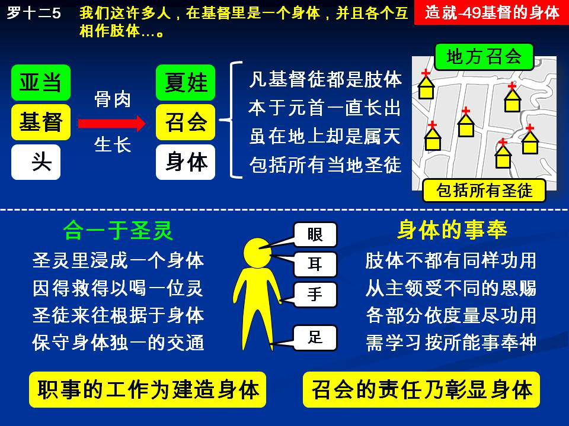

诗歌：598首、629首
重要经文：
以弗所书五章29~30节：从来没有人恨恶自己的身体，总是保养顾惜，正像基督待召会一样；因为我们是祂身体上的肢体。
罗马书十二章4~5节：正如我们一个身体上有好些肢体，但肢体不都有一样的功用。我们这许多人，在基督里是一个身体，并且各个互相作肢体，也是如此。
哥林多前书十章17节：因着只有一个饼，我们虽多，还是一个身体，因我们都分受这一个饼。
纲目要点：
壹 召会是出于基督的：
一 神从基督身上造出召会。
二 基督徒都是基督身上的肢体。
三 地方的召会应包括当地所有神的儿女。
贰 召会是合一于圣灵的：
一 借着圣灵的浸把许多的基督徒浸成一个身体。
二 我们所要保守的，是基督徒的交通。
参 身体的事奉：
一 所蒙恩典不一样，在神面前所得的恩赐也不一样。
二 要学习按着我们所能作的去作，都起来事奉神。
肆 身体的建立。
伍 身体的见证：
一 召会在地上的工作，乃是要显明这一个身体。
二 我们虽多，仍是一个饼，一个身体。
信息选读：
召会是出于基督的
创世记二章给我们看见，神从亚当身上取下一条肋骨来造成夏娃。这是预表召会与基督的关系：夏娃是从亚当出来的，召会是从基督出来的。神如何从亚当身上造出夏娃来，照样神也从基督身上造出召会来。神不只将基督的恩典、能力、性情给我们，祂并且将基督的身体给了我们。神将祂的骨、祂的肉、祂的自己给了我们，像神将亚当的骨给了夏娃一样。所以什么是召会呢？召会就是从基督出来的那一个。圣经里给我们看见，基督乃是召会的头，召会乃是基督的身体。以个人来说，每一个基督徒都是基督身上的肢体，都是从基督出来的。
召会的长大是从基督里面长出来的
召会在地上，虽然到今天为止，人数还是差得多，但是里面却是完全的。召会的长大，是从里面长出来的，是从基督里面长出来的。今天在地上的召会，就是基督的身体。从外表看来，好像是得救的人加入召会，但是从属灵的实际来说，不是人来加入召会，乃是基督的身体从里面生长，是出乎元首的一直生长。所以召会不是别的，召会乃是从主身体上出来而住在地上的。召会是从天上的元首出来的，是住在地上，同时又是一个身体，是与元首合一的。
召会是合一于圣灵的
召会出于基督，这是说到来源的问题。每一个基督徒，都有新的生命。一个基督的生命，化成了千万个基督徒。约翰十二章给我们看见，一粒麦子落在地里死了，就结出许多子粒来。（24。）这些结出来的子粒，都有原来那粒麦子的成分；一粒化成许多粒，许多粒都是出于那一粒。那么，这许多有同一生命的基督徒，怎样合成一个基督的身体呢？这是靠圣灵的工作。从一位基督化成千万的基督徒，圣灵又将千万的基督徒都浸在一起，使他们成为一个身体，这是林前十二章十二至十三节所说的基本教训。身体是一个，却分成许多肢体；这许多肢体，怎样能合成一个身体呢？『都从一位圣灵受浸，成了一个身体。』换句话说，这一个身体是浸成功的。借着圣灵的浸，就把这许多的基督徒浸成一个身体。
身体的事奉
召会必须给所有的弟兄姊妹都有机会来事奉。所有的肢体，连不俊美的也在内，都有属灵职事上的用处。身体上不可能有许多肢体是没有用处的。每一个弟兄姊妹在身体上都是肢体，每一个肢体都有他的用处，每一个肢体都该有他的事奉。你如果是一个基督徒，你就是基督身体里面的一个肢体；你是身体里面的一个肢体，你就得在神面前有你的事奉。我们必须看重这一个普遍的事奉。我们每一个基督徒都应该有我们各人的事奉，我们非在神的面前好好的事奉不可。
一同事奉彰显基督的身体
身体不能让一个肢体失职。眼睛如果不看，全身就黑暗。脚如果不走路，全身就不能走。眼睛应当看，脚应当走。即使你从神那里所得的恩赐是非常小的，也盼望你不把这一个恩赐藏起来。你所得着的恩赐，即使不过是一千银子，（太二五14～30，）你也不可藏起来不用。不管所得着的是大的恩赐，或者是小的恩赐，是『五千』的也好，是『二千』的也好，是『一千』的也好，每一个人都应当把他所得的拿出来事奉。如果有人不专一的事奉，把他的『一千』埋起来，就使召会受亏损。一个身体上如果有几个肢体不动，就使身体大大的受亏损。在召会中，『有五千』那么大的恩赐的人，是不常有的；可是，任何神的儿女即使是恩赐最小的，还有『一千』。凡有『一千』恩赐的人，如果都出来事奉，比只靠少数有『五千』恩赐的人的事奉有效得多。所以，如果有『一千』的人都出来事奉，召会必定兴旺。
身体的建立
以弗所四章十一至十三节：『祂所赐的，有些是使徒，有些是申言者，有些是传福音者，有些是牧人和教师，为要成全圣徒，目的是为着职事的工作，为着建造基督的身体，直到我们众人都达到了信仰上并对神儿子之完全认识上的一，达到了长成的人，达到了基督丰满之身材的度量。』召会应该有机会让初信的人显明他是不是一个话语的执事。不要把神所赐下的恩赐堵住了，不给人机会显出他是不是话语的执事。要基督的身体被建立，就得求神赐下话语的执事，也给人有机会显明他是不是一个话语的执事。
身体的见证
召会是基督的身体，所以，召会在地上的工作，乃是要显明这一个身体，并且要显明这一个身体是合一的，显明这一个身体是一个。召会不是要到了天上才彰显身体的合一，召会是要在地上就彰显身体的合一。『我们虽多，仍是一个饼。』在新约中，擘饼是一件非常重要的事。我们每逢主日擘饼记念主的时候，一面是表明主替我们擘开身体，另一面也表明这一个身体是合一的。擘开，是主在十字架上为着爱我们的缘故，把自己舍了；合一，是神的儿女在这里合而为一。每一个主日，我们都到主的面前来，承认主的身体为我们擘开了，也承认神所有的儿女是合一的；一面是见证主替我们舍了身体，一面是见证召会就是基督的身体，身体乃是一个。我们虽多，仍是一个饼。我们是一个饼，一个身体，我们彰显这一个合一。凡明白什么叫作基督的身体的人，每一个主日都要作这一个见证，每一个主日都要见证这饼是一个。在神面前，这一个饼是一切聚会的中心，神的儿女聚集在一起，就是为着擘饼交通。越认识基督的身体的人，就越明白应当借着擘饼来作身体合一的见证。擘饼一面是记念主的死，另一面乃是彰显身体的合一。『我们虽多，仍是一个饼，一个身体。』我们要作出来给世人看，作出来给宇宙看，作出来给一切的活物看，召会是一个身体！我们在身体里，每一个肢体都有功用，每一个肢体都应该有事奉。 （摘自初信造就第四十九篇）
课程复习：
一 当神从亚当身上取下一条肋骨来造成夏娃，这幅图画是预表什么？
二 为什么召会的长大是从基督里面长出来的？
三 我在召会生活中的专项事奉是什么？
四 有『一千』的人都出来事奉，召会必定兴旺，请说明原因为何？
五 为什么我们在基督的身体里，每一个肢体都应该有事奉？
辅助图表：
